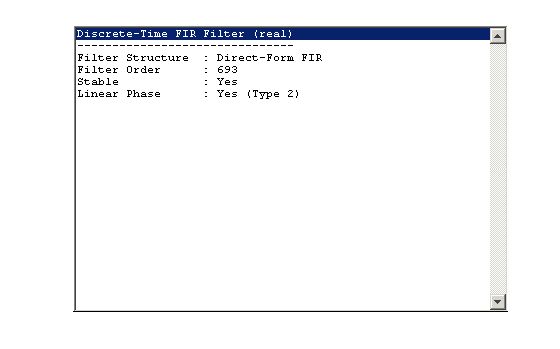
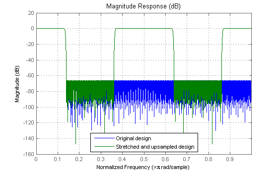
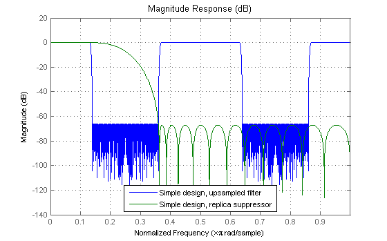
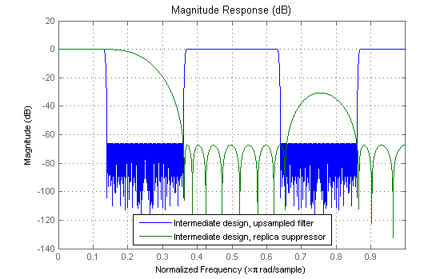
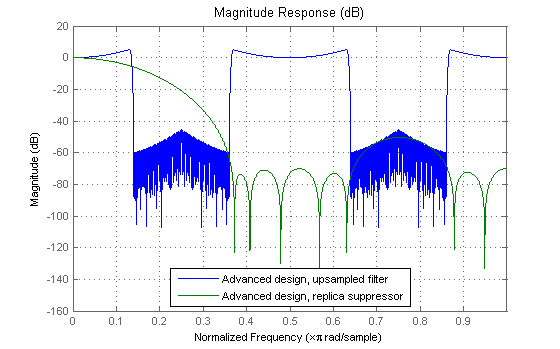
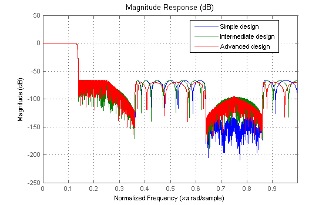

One of the drawbacks of using FIR filters is that the filter order tends to grow inversely proportional to the transition bandwidth of the filter. This demo showcases efficient designs of FIR filters with very narrow transition-bands using the interpolated FIR (IFIR) function.
Consider the following design specifications:
Rpass = 0.001; % Passband ripple Fpass = 0.13; % Passband edge Rstop = 0.0005; % Stopband ripple Fstop = 0.14; % Stopband edge
A regular linear-phase equiripple design that meets the specs can be designed with:
F= [0 Fpass Fstop 1]; A = [1 1 0 0]; R = [Rpass Rstop]; b = firgr('minorder',F,A,R); hfvt = fvtool(b,'Analysis','info'); set(hfvt, 'Color', [1 1 1]);
The filter length required turns out to be 694 taps.
From multirate signal processing theory, it is well-known that upsampling a signal compresses its spectrum. This fact is used in IFIR design. Instead of directly designing a filter that meets the transition band requirements, we design a filter that meets L*Fpass and L*Fstop as its band-edges, where L is the interpolation factor (that is, we stretch the transition width by a factor of L). Because the filter order grows inversely proportional to the transition width, the filter order required to meet the "stretched-out" specs is significantly lower than the filter order required to meet the original specs.
For example, suppose L = 4.
L = 4; % Interpolation factor F = [0 Fpass*L Fstop*L 1]; bstrech = firgr('minorder',F,A,R); set(hfvt, 'Filters', dfilt.dffir(bstrech));
The filter length required reduces to 174 taps
We have reduced the filter length significantly. Of course, that is not the filter that we wanted. If we now upsample the impulse response by a factor of L, the spectrum is compressed by such a factor and we meet the original transition band requirements:
bup = upsample(bstrech,L); set(hfvt, 'Filters', [dfilt.dffir(b), dfilt.dffir(bup)], ... 'Analysis', 'magnitude'); legend(hfvt,'Original design','Stretched and upsampled design');
The upsampled "stretched" design has a total length of 696 which is slightly larger than the original design (694). So the overall delay in the filter is slightly larger. However, there are only 174 nonzero multipliers. Unfortunately, we don't yet have the lowpass filter we need. The upsampling has introduced unwanted spectral replicas. The idea of IFIR design is to cascade the upsampled filter with a low order lowpass filter that removes this spectral replicas.
Rather than continuing the design "by hand", we will now use the IFIR function. IFIR returns the two filters (the upsampled filter and the replica suppressor filter).
We can choose different levels of optimization in the design:
[h,g]=ifir(L,'low',[Fpass Fstop],R,'simple'); set(hfvt, 'Filters', [dfilt.dffir(h),dfilt.dffir(g)]); legend(hfvt,'Simple design, upsampled filter','Simple design, replica suppressor');
[h2,g2]=ifir(L,'low',[Fpass Fstop],R,'intermediate'); set(hfvt, 'Filters', [dfilt.dffir(h2),dfilt.dffir(g2)]); legend(hfvt,'Intermediate design, upsampled filter',... 'Intermediate design, replica suppressor');
[h3,g3]=ifir(L,'low',[Fpass Fstop],R,'advanced'); set(hfvt, 'Filters', [dfilt.dffir(h3),dfilt.dffir(g3)]); legend(hfvt,'Advanced design, upsampled filter',... 'Advanced design, replica suppressor');
In the 'simple' case, the replica suppressor filter is a simple lowpass filter (this case is the most robust and also the fastest design). In the 'intermediate' case, the replica suppressor filter is designed with a don't-care region (where the periodic filter already provides the required attenuation). This results in a (slight) reduction of filter order in some cases. The 'advanced' design is much more involved. It jointly optimizes the periodic filter and the replica suppressor filter in order to achieve the required specs. The result is significant savings in the order of the replica suppressor filter and a slighter savings in the order of the periodic filter.
The overall filter response can be found by forming a cascade of the two filters for each case:
Hoverall = cascade(dfilt.dffir(h),dfilt.dffir(g)); Hoverall2 = cascade(dfilt.dffir(h2),dfilt.dffir(g2)); Hoverall3 = cascade(dfilt.dffir(h3),dfilt.dffir(g3)); set(hfvt, 'Filters', [Hoverall,Hoverall2,Hoverall3]); legend(hfvt,'Simple design','Intermediate design',... 'Advanced design');
Because the periodic filter has many zeros, it lends itself nicely to multirate implementation. Instead of implementing it as a function of z^L, it can be placed after a downsampler (by a factor of L) -by making use of the noble identities- as a function of z. The reduction of the sampling rate will make things more efficient anyway, since the bandwidth of the signal will be reduced significantly by this lowpass filter. Otherwise the Nyquist sampling criterion will be unnecessarily over-satisfied, resulting in inefficient processing due to redundant information.